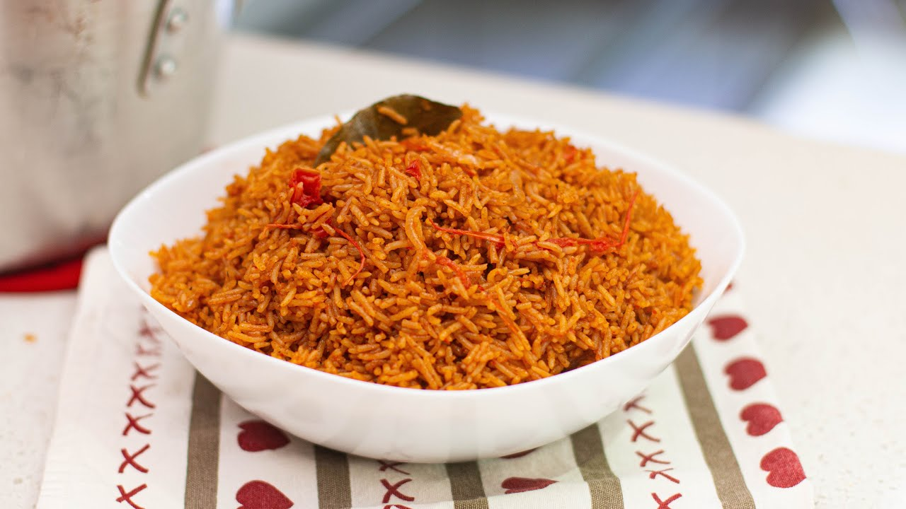

There are various recipes for Jollof rice and they all depend on which Country you're from though I'm only familiar with three variants.
There's the Senegalese which of course, Jollof rice originated from. There's also a Ghanaian version which is in no way similar to the
Nigerian version and then we have the ultimate version...Yes! the Nigerian version ( no disrespect to the people of Ghana and Senegal).
Ingredients
- 1 cup vegetable oil
- 8 cups rice
- 4 tbsp tomato puree
- 10 large fresh tomatoes
- 6 teaspoons curry powder
- 3 ½ teaspoon thyme
- 5 non chicken seasoning cubes
- 3 large onion
- 4 cloves garlic
- 8 scotch bonnet peppers
- 1 inch ginger
- 1 TBS butter or margarine
- 2 tsp of Powdered nutmeg
- 4 bay leaves
Steps
- Heat the oil in a heavy based saucepan with 1 TBS of butter or margarine.
- Fry the onions until golden brown. add your tomato puree.(make sure the tomato puree fries for a good amount of time to reduce the acidic taste).
- Add the curry, thyme and seasoning cube followed by blended pepper(you can blend ginger& garlic with your Pepper mixture) add bayleaf and nutmeg.
- Now allow the stew base to simmer and reduce. Make sure you have a pot cover handy, as it often becomes very hot and messy whilst simmering the stew base.
- Do this for about 15 to 20 minutes, stir continuously to make sure it is not burning.
- Wash the rice in the meantime until the stew base is ready.
- Strain the rice and add it to the pot. Season to taste carefully.
- Top up the pot with enough water for those with an experienced eye for rice. This would normally be about 500mls (2 cups), you may need to top up if the rice is still hard. Bring to the boil.
- Once simmering nicely and the moisture has nearly all gone, cover with foil paper right above the rice (to lock in moisture and add natural cooking pressure).
- Close with an air tight lid. Reduce the heat simmer slowly
- Taste the rice and once the grains are cooked, raise the heat back to high for just 2 minutes, and allow the bottom of the pot to toast.
Take off the heat and your party jollof rice is ready to serve. Toppings with carrot and green beans are recommended but optional.
Enjoy with an ice cold beverage of your choice.